unidas pela amizade
Conheça cada
uma dessas
poderosas fadas.
As Winx são um grupo de fadas unidas pela amizade, magia e trabalho em equipe.
Juntas, enfrentam diversos vilões e desafios para proteger o mundo mágico.
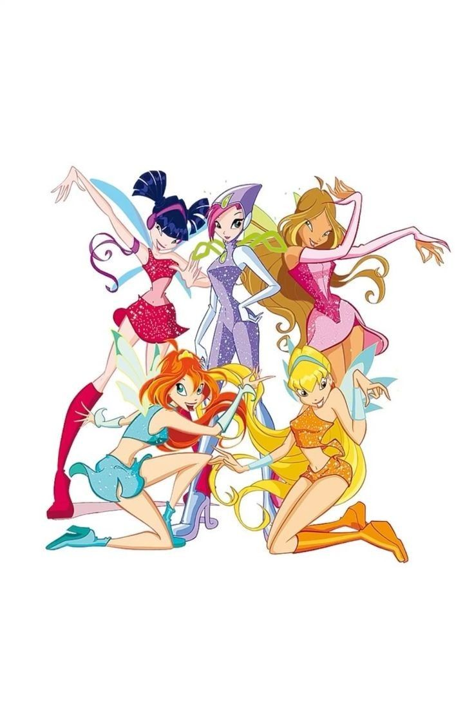
conheça as mais mais de todas
Fadas e vilãs em destaque
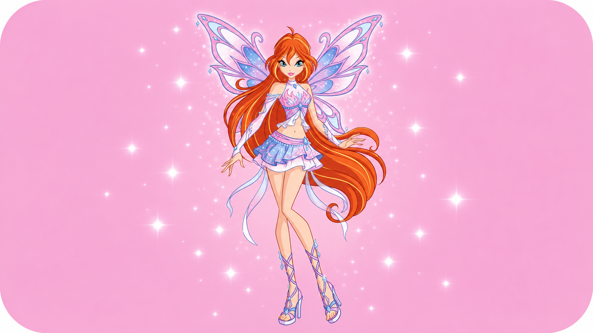
Blue: líder do grupo e fada da Chama do Dragão
É a princesa de Domino e possui a magia mais poderosa do universo.
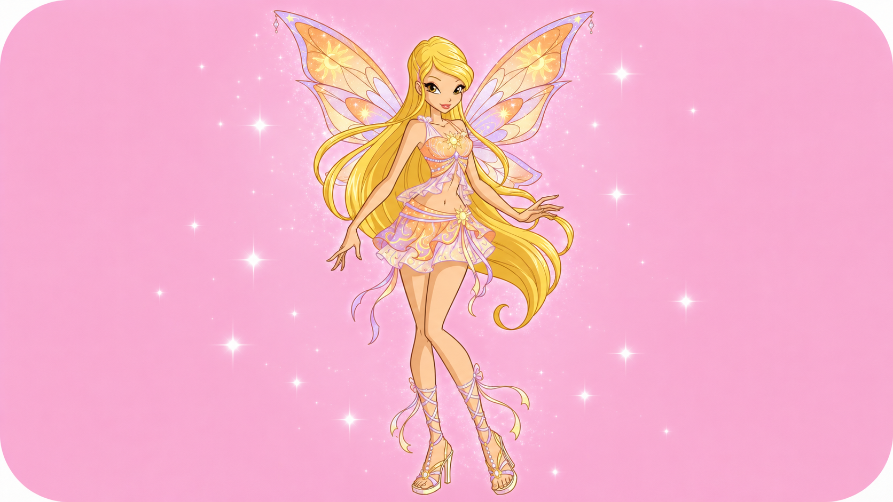
Stella: A fada do Sol e da Lua
É a princesa de Solaria, ama moda e traz alegria e estilo para o grupo

Musa: A fada da Música
Vinda de Melody, expressa seus sentimentos através de instrumentos e ondas sonoras
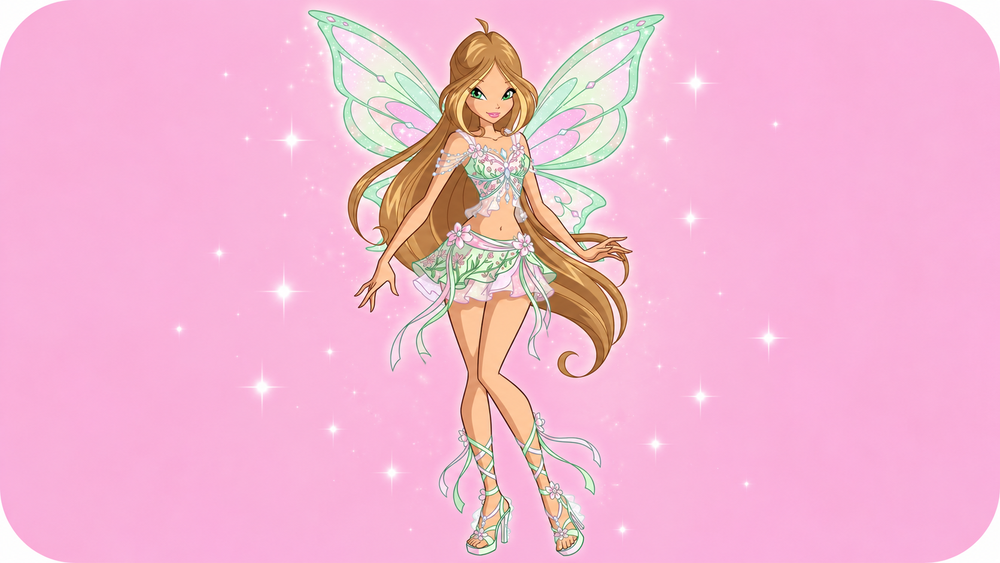
Flora: A fada da Natureza
Vinda de Lynphea, é doce, calma e usa o poder das plantas e flores para proteção.

Tecna: A fada da Tecnologia
Vinda de Zenith, resolve problemas com pura lógica, inteligência e hologramas.
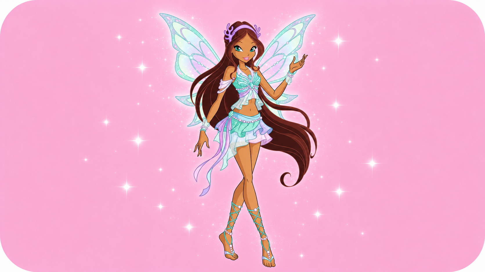
Aysha: A fada das Ondas
É a princesa de Andros, uma atleta determinada que controla o fluido mágico Morphix.
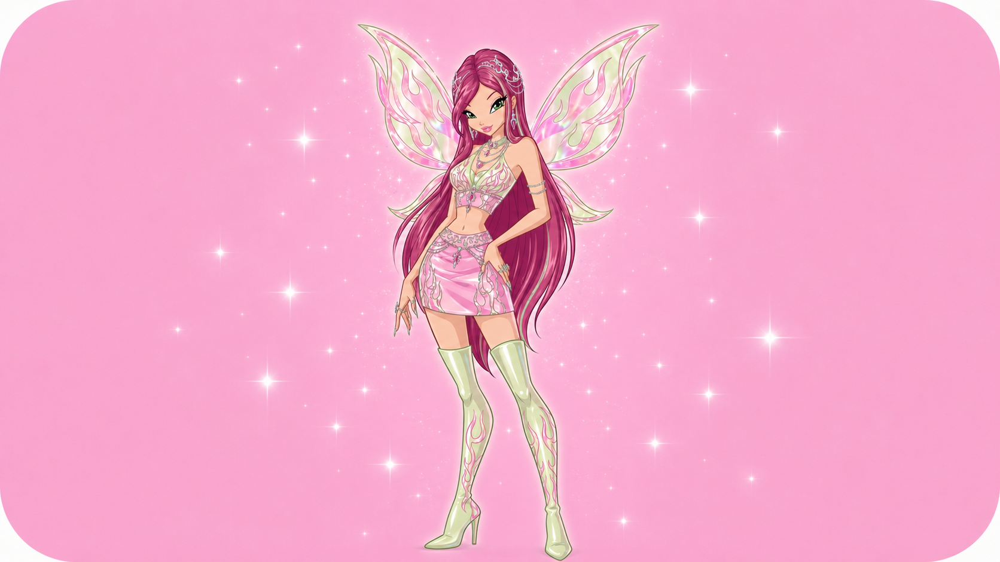
Roxy: A fada dos Animais
É a última fada da Terra, consegue se comunicar com bichos e ganhou grande destaque na 4ª temporada
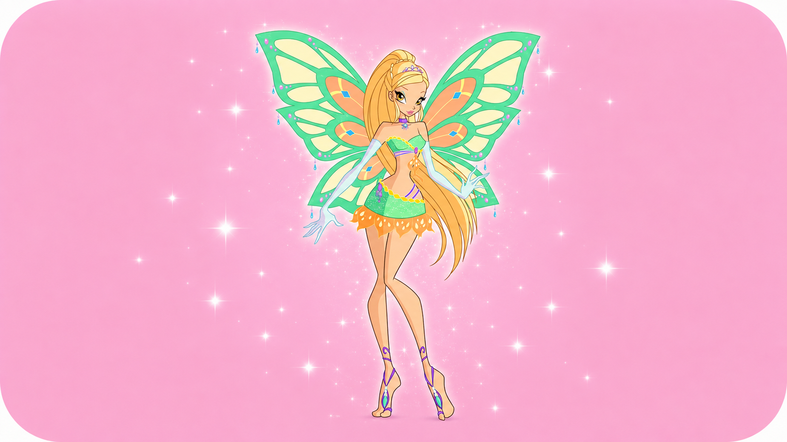
Daphne: A fada Ninfa de Domino
Irmã mais velha da Bloom, controla os quatro elementos e o poder Sirenix. Passou anos como espírito antes de recuperar seu corpo.
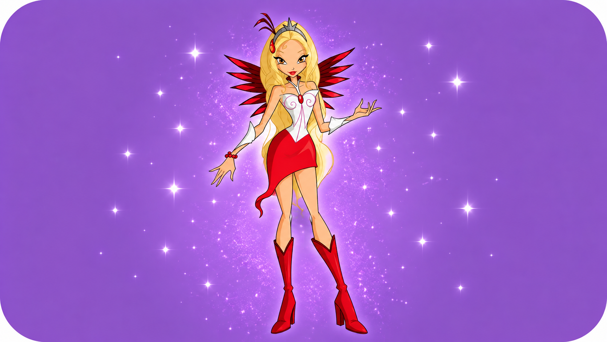
Diaspro: A fada das Gemas e Pedras Preciosas
É a ex-noiva do Príncipe Sky e nutre um ciúme obsessivo, agindo muitas vezes como vilã para atacar a Bloom
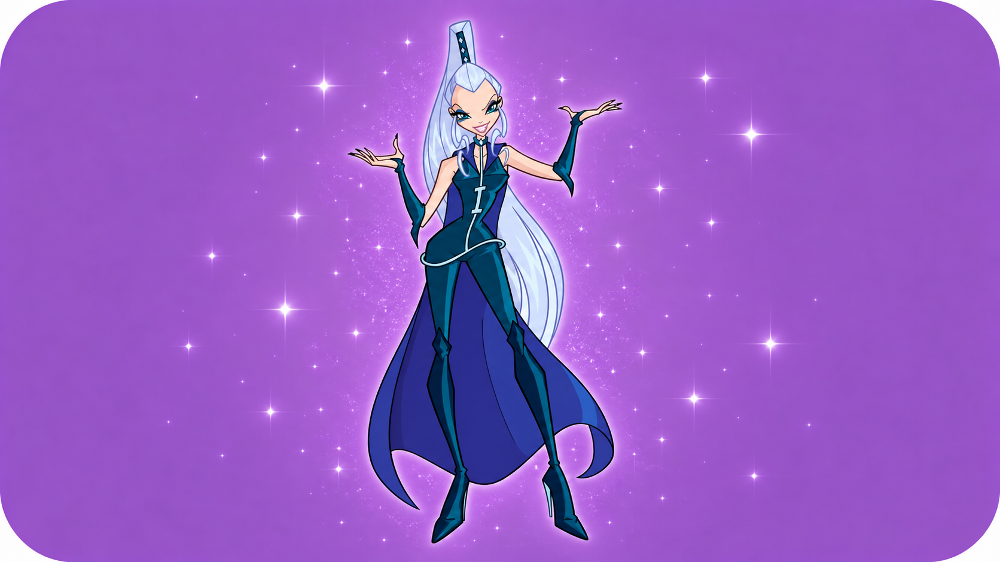
Icy: A líder das Trix e bruxa do Gelo
É fria, cruel e a principal rival da Bloom.
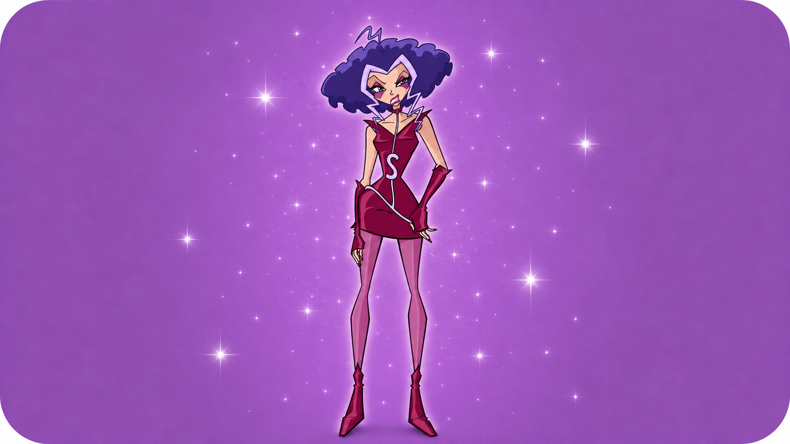
Stormy: A bruxa das Tormentas
É a mais explosiva e impulsiva, controlando raios, ventos e tempestades.
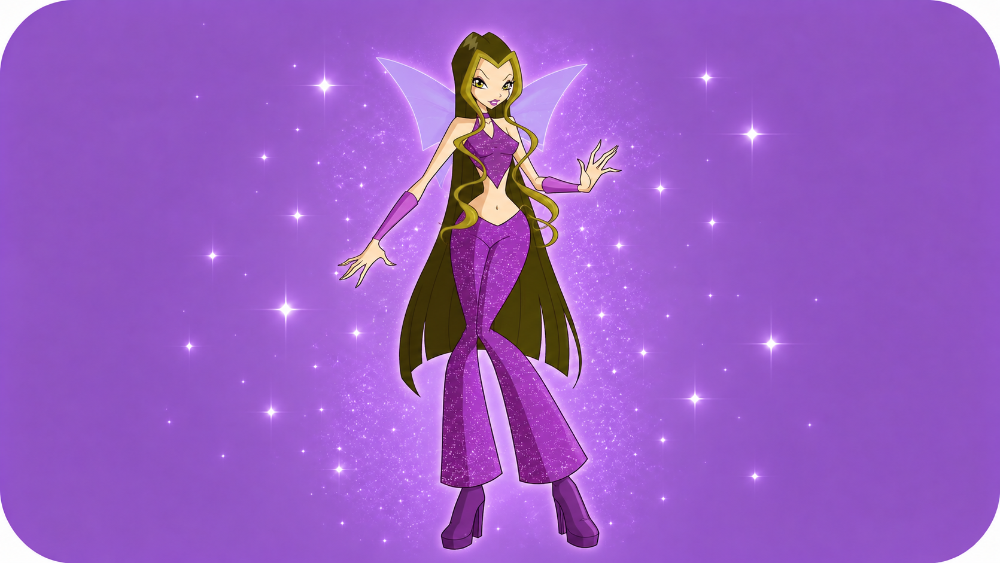
Darcy: A bruxa das Sombras e das Ilusões
Usa hipnose e manipulação mental para confundir os inimigos